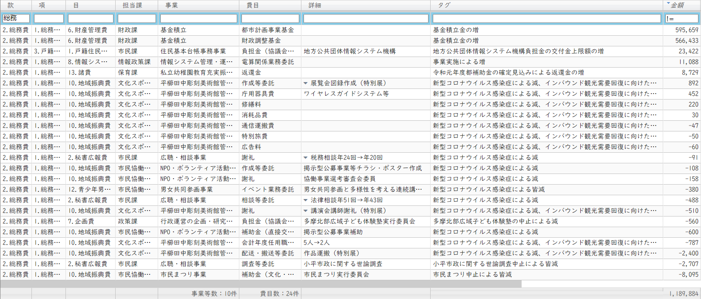
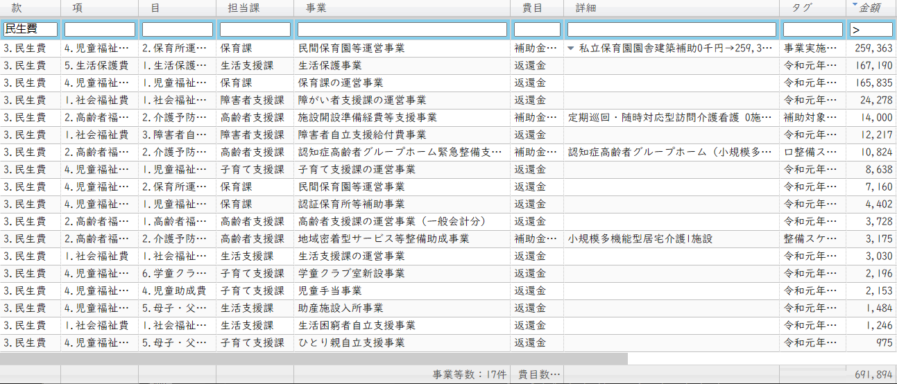
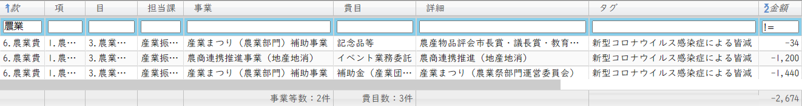
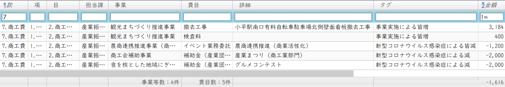
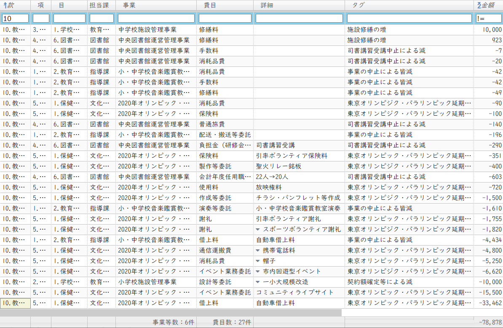

議案第47号 令和2年度小平市一般会計補正予算（第5号）
（作成中）
総務委員会付託
目次
概要
市長報告（クリックで開きます）
今回の補正予算は、昨年度の決済をもとに、繰越金、及び返還金の整理等を行うとともに、歳入においては、普通交付税、及び臨時財政対策債が当初の見込みを上回りましたので増額いたします。
また、これに伴い確保される財源を活用し、市の喫緊の課題である保育園待機児童の解消などに取り組むほか、基金積立金を増額し､財政基盤の安定化を図るものです。
歳出の主な内容ですが、待機児童の解消に向けまして、来年度に新規開設する私立保育園1園の建築補助を行うほか、3歳未満の多胎児がいる家庭への移動支援として、子ども商品券を配付いたします。
また、定期巡回・随時対応型訪問介護看護、認知症高齢者グループホーム、小規模多機能型居宅介護の施設整備等にかかる補助金を増額するほか、用水路、道路、及び公園などの維持管理費を増額するとともに、新小平駅前公衆喫煙所の移設工事などを行います。
そのほか、昨年度の都市計画税の余剰分を都市計画事業基金に積み立てるとともに、繰越金の増に伴い財政調整基金の積立額を増額し、歳入においては、財政調整基金繰入金を減額いたします。
補正予算の規模といたしましては、歳入歳出それぞれ17億7千796万6千円を増額し、歳入歳出予算の総額をそれぞれ942億5千434万5千円とするものです。
財源構成といたしましては、事業の実施に伴い、国、都支出金、及び地方債を補正するとともに、繰越金、普通交付税、及び臨時財政対策債、特別会計繰入金を増額いたします。
解説
🕵補正予算を分析する
まず歳入です。金額順に並べると以下のようになります。最も大きいのは前年度の繰越金で、前年度の繰入金確定によるものです。
歳入に関する追記事項：
| 款 | 項 | 目 | 説明 | 金額 千円 |
|---|---|---|---|---|
| 1.地方交付税 | 1.地方交付税 | 1 | 普通交付税 □普通交付税の交付決定による増 | 391,362 |
| 2.繰入金 | 1.特別会計繰入金 | 2 | 後期高齢者医療特別会計繰入金 □令和元年度後期高齢者医療特別会計の事業確定による繰入金の増 | 21,439 |
| 2.繰入金 | 2.基金繰入金 | 10 | 東京オリンピック・パラリンピック子ども夢・未来基金繰入金 □事業延期による皆減 | △52,808 |
| 2.繰入金 | 2.基金繰入金 | 1 | 財政調整基金繰入金 □基金繰入金の減 | △170,000 |
| 2.繰越金 | 1.繰越金 | 1 | 前年度繰越金 □前年度繰越金の増 | 1,132,865 |
| 23.市債 | 1.市債 | 1 | 中央公民館等の複合化の整備に係る設計 □起債額の増 | 10,500 |
| 23.市債 | 1.市債 | 5 | 第十小学校大規模改造工事 □起債額の増 | 2,300 |
| 23.市債 | 1.市債 | 5 | 市民総合体育館屋根改修工事 □起債額の増 | 3,600 |
| 23.市債 | 1.市債 | 6 | 臨時財政対策債 □起債額の増 | 177,424 |
- 普通交付税が3.9億円予算より多く支給されました
- 一般財源に入る予定だったオリパラ基金は、取り崩さず全額そのまま残すことになります
- 財政調整基金取り崩し予定のうち、1.7億円分は取り崩さず基金に残されることになります
- 繰越金の増が1,132,865千円あり、その半額595,659千円が財政調整基金に積み立てられます
😤 オリパラ基金（オリンピック・パラリンピック子ども夢・未来基金）を1円も取り崩さないということです。来年度オリンピックが開催されるにしても、コロナ禍前とまったく同じ事業になるはずがないので、少なくとも内容の見直しが必要です。5,280万円をそのまま全額基金に残したままにするとは信じられません。基金にしてしまうと、別の用途に使えないことになるため、その分の機会損失が生じることになります。
また、財政調整基金1.7億円分の取り崩しもしない（一般財源に入れず基金に残したままにする）とは、コロナ禍という状況が分かっているのでしょうか。
このあたり組替え動議の討論にて、私からも発言する機会がありましたのでご参照ください。
次に、歳出を財源を含めて金額順に並べると以下のようになります。それぞれの内訳は以下で説明します。
👁️🗨️ふらっとビューア（予算歳出） ver 1.0.1
ふらっとビューアを使って歳出の詳細を見ていきます。使い方はこちらに記載しました。
それぞれの費用内訳
(1) 総務費 🏢
総務費を金額順に並べました。
主な内訳は以下の通りです。
- 都市計画事業基金に約6.0億円を積み立て
- 財政調整基金に約5.7億円を積み立て
- 地方公共団体情報システムの負担金、約2,300万円増
- 電算関係業務委託の増で、約1,100万円増
- 平櫛田中彫刻美術館事業で、約390万円の減と約160万円の増
- その他事業中止により、約1,300万円の減
🕵 都市計画事業基金とは
土地や家屋を所有している人から徴収する「都市計画税」は、その用途が地方税法に定められており、「都市計画事業」または「土地区画整理事業」にしか使えない目的税です。これらの事業を行うことで土地や家屋の利用価値が増大するため、「都市計画税を払う人に受益がある」という論理になっています。
詳しい内容はここをクリック
市町村は、都市計画法に基づいて行う都市計画事業又は土地区画整理法に基づいて行う土地区画整理事業に要する費用に充てるため、当該市町村の区域で都市計画法第五条の規定により都市計画区域として指定されたもの（略）のうち同法第七条第一項に規定する市街化区域（略）内に所在する土地及び家屋に対し、その価格を課税標準として、当該土地又は家屋の所有者に都市計画税を課することができる。～略～
都市計画税を「課税するかしないか」、「いくらにするか（課税水準）」については、市町村が自主的に決められます。目的税であるため、他の収入と区別するために、集めた都市計画税を特別会計に入れて管理している自治体もあります。小平市では他の収入と同じく一般会計に入れて管理しています。しかし、以下の図に示すように、事業に使わなかった剰余分を「都市計画事業基金」に積み立てることで区別しています。
都市計画税の全体像については以下の資料に分かりやすくまとめられています。
📄 自治の窓 都市計画税の課税について
小平市における令和元年度の都市計画税と都市計画（事業）費は以下の通りです。
| 都市計画税 | 当初予算約 23 億円 → 決算はこれから |
|---|---|
| 都市計画費 | 当初予算約 24 億円 → 第4号補正で約 20 億円へ → 決算はこれから |
つまり現時点で「都市計画税 - 都市計画費 = 約 3 億円」であり、この分が丸々残っていると推察できます。
次に、財政調整基金約 5.7 億円の積み立ては、地方財政法の「決算の余剰金はその半分を積み立てなくてはならない」というルールにしたがって積み立てているものです。
🕵 財政調整基金の積み立て
地方財政法第7条（剰余金）では、決算で剰余金が出た場合は、その半分を（翌々年度までに）積み立てる必要があると定められています。小平市ではこれを「財政調整基金」として積み立てています。
詳しい内容はここをクリック
地方公共団体は、各会計年度において歳入歳出の決算上剰余金を生じた場合においては、当該剰余金のうち二分の一を下らない金額は、これを剰余金を生じた翌翌年度までに、積み立て、又は償還期限を繰り上げて行なう地方債の償還の財源に充てなければならない。
２ 第四条の三第二項及び第三項並びに第四条の四の規定は、前項の規定により積み立てた金額について準用する。
３ 前条の公営企業について、歳入歳出の決算上剰余金を生じた場合においては、第一項の規定にかかわらず、議会の議決を経て、その全部又は一部を一般会計又は他の特別会計に繰り入れることができる。
４ 第一項及び前項の剰余金の計算については、政令でこれを定める。
なお、この条文には以下のことも書かれています。
- 翌年度に全額を積み立てる必要はなく、翌翌年度までに積み立てれば良い
- 公営企業会計の余剰金については、議決があれば積み立てなくて良い
次に、地方公共団体情報システム機構の負担金約2,300万円は、マイナンバー関係の電子証明書手続き急増と今後の電子証明書利用増加を見込んだ、地方公共団体情報システム機構のシステム性能を増強するためのものとのことです。財源は全額国庫財源です。このシステムはブラックボックスですね。総計でいくらかかっているのでしょうか。
地方公共団体情報システム機構の負担金は総計でいくらかかっている？
次に、電算関係業務委託の約1,100万円は、国外転出者のマイナンバーカード等利用促進を図るため、住民基本台帳システムと戸籍付票システムの改修を行うものだそうです。全額国庫負担で、うち480万円分が一般財源に入っています。
（理事者側答弁の概要）マイナンバーカードは住民票を基礎としており、国外転出者には利用できない現状がある。一方で国外転出者もインターネット上で本人確認を行うニーズが高まっていることから、国外転出者についてもマイナンバーカードが使えるように改修を行うもの。住民基本台帳システムについては、主なものとしては、本籍地の市区町村へ、戸籍の付票に記載するための住民票コード等の情報を通知する機能を追加するもの。戸籍の付票システムについては、主な改修として、戸籍付票への性別、生年月日を記録する機能追加、住民地、市区町村から通知される住民票コード等の情報を、戸籍の付票情報と突合し、住民票コード等を戸籍の付票に記録する機能などの追加をするもの。（増原 情報政策課長）
次に、平櫛田中彫刻美術館管理運営事業についてです。
コロナ禍によるイベント中止などのため、歳出が385万4千円減少しました。その分を使ってということだと思いますが、インバウンド回復のためと銘打ち、以下の事業に合計で159万4千円計上しています。
- 【作成等委託】展覧会図録作成（特別展）
- 【作成等委託】会場ディスプレイ等作成
- 【作成等委託】チラシ等作成
- 【庁用器具費】ワイヤレスガイドシステム等
- 修繕料、消耗品費
😟 質疑で伊藤央議員も指摘していますが、これは今やるべき事業ではありません。そもそも平櫛田中美術館のインバウンド需要はどれくらいあるのでしょうか。160万円かけるだけの経済波及効果があるのでしょうか。予算が余ったからと、思いつきの事業に使おうというのは、この危機的状況に行うべきことではありません。
平櫛田中美術館のインバウンド需要はどれくらい見込めるのか。
(2) 民生費 👶🦯🦽🧓🍚
主な内訳は以下の通りです。
- 来年4月に開園予定の私立保育園建築費及び用地確保への補助に約2.6億円
- 鈴木町1丁目の特別養護老人ホームに併設する定期巡回・随時対応型訪問介護看護の事業開始が早まったことによる計上1,400万円
- 小川町2丁目に整備をしている認知症高齢者グループホームの工事費補助に約1.1千万円
- 小川町2丁目に整備している小規模多機能型居宅介護の整備補助に約320万円
- その他、返還金が合計約4億円
私立保育園新設については中江美和議員が質疑で指摘しているように「新設計画や公募を行うことについて議会の承認を経ていない」という問題があります。地方自治法の「総計予算主義の原則」に反している可能性があるのです。
(3) 衛生費 🩺🗑️

主な内訳は以下の通りです。
- 公衆喫煙所に約900万円
- 返還金に約590万円
- 多胎児家庭へのこども商品券配付事業に約150万円
🤔 公衆喫煙所については橋本久雄議員が確認していますが、900万円て高くないですかね。
(4) 農業費 🌾🍆🌽🍏🍓
主に、令和2年度の産業まつりが中止になったことによる費用の減となります。
(5) 商工費 🛠️🏮🏙️
小平駅南口の古くなった看板撤去工事と、イベントの中止による費用の減です。
(6) 土木費 🚧

道路、用水路、公園の修繕費と、イベント中止による費用の減です。約5,700万円と金額の大きい「緊急輸送道路沿道建築物耐震改修補助」は、地権者から、工事費の高騰により自己負担分が高額になり、状況が落ち着くまで待ちたいと申し出があったことから減になっているものです。これは来年度まで事業を延期するとのことです。
(7) 教育費 🧑🏫🧑🎓
中学校施設管理事業の施設修繕の増1,000万円は、老朽化の進展で施設修繕料が不足することから追加するものです。中央図書館はトイレの様式化に係る修繕料が増加することによるものだそうです。それ以外は各種イベントの中止による減となります。
😤 オリンピック費用関連は本会議でも質問しましたが、中止が決まった段階でもっと早くに減額できていたと思います。早めに減額して一般財源に戻せば他の用途に活用できます。機会損失です。
以上が費用の内訳となります。より詳しい内容は、付託された総務委員会の会議録をご参照ください。
主な質疑（発言順）
質疑について（ここをクリック）
以下は要約ですので、正確な質疑内容は会議録をご参照ください。分かりやすくするため、括弧書きの部分は、実際の質問内容にかなり修正を加えたところもあります。また、簡略化のため、理事者側（市役所側）の答弁から敬語表現を省いている場合があります。実際は理事者側のすべての答弁において、市民に対する敬語表現で回答がなされています。
私（安竹）の質問＝、意見＝
一人会派の会 その他議員の質問＝、意見＝
その他 議員の質問＝：、意見＝
＠ 本会議
| どういう検討によって、コロナ対策としてこれ以上の地域振興施策を実施しないという判断になったか。（中江 美和） |
コロナ対策をやらないということではない。8月臨時議会でほとんどの施策を予算化した。その事業の状況を見ながら、世の中の経済状況を見ながら、必要があれば対策を打っていく。（津嶋 企画政策部長）
😨 この危機的状況を前にしながら、市の答弁からは危機感が一切感じられません。そもそも本来は市長が答えるべき内容の質問です。こうして「市長が職員に丸投げして責任を持たない」ことが、多くの問題の原因だと私は考えています。私の一般質問で問いただしました。
| 5号補正でコロナに積極的な姿勢は見られない。様々なイベント中止による予算減額があるが、その分を代替え事業などに使用しない判断をした理由は。（中江 美和） |
今回一般財源として確保しているところがあり、今後必要があればコロナ対策の事業に活用する。（津嶋）
| 保育園新設について、そもそも当初予算に計上されておらず、こども子育て支援事業計画にも1園建設すると書いていない。5月に待機児童が出たら保育園を作るということで、手法が場当たり的、計画性に欠ける。新設の保育園について計画を作成するつもりはないのか。（中江 美和） |
小平市では待機児童が出てからということで例年取り組んでいる。市内の東南地域に待機児童が集中している。そういう傾向を捉えてピンポイントに対策を打っていく。そういうことに適ったスケジュール。「こども子育て支援事業計画」では確保数として計画を立てている。新規の認可保育園で確保するのか、認定こども園に幼稚園が移行することで確保するのか、幼稚園の預かりなどで確保するのか、様々な手法で対応していくため、必ずしも新規の開設をするだけではない。極力お金がかからない方法で確保していく。（伊藤 子ども家庭部長）
| 保育園運営事業者の選考過程や選考理由は、なぜ公表しないのか。（中江 美和） |
内部で選考の評価項目を作って点数化している。評価のところを整備しながらやってきており、ほぼ固まってきたので、今後評価項目の公表を考える。（伊藤）
| 保育園の事業者選考について、地方自治法に規定する総計予算主義の原則から、当初予算で計上されていない事業の公募手続きを、予算の裏付けなく実施することは許されるのか。（中江 美和） |
予算はこれから可決してもらうため契約はできないが、準備的に当たっていくところは問題ないと考えている。（津嶋）
🕵 総計予算主義の原則
総計予算主義の原則とは、地方自治法第二百十条に規定されている「歳入歳出のすべてを予算に計上する」というルールです。予算案は議会で審議されるため、このルールがあるおかげで「行政が市民の知らないところで勝手にお金を使う」ことが抑止されることになります。
一会計年度における一切の収入及び支出は、すべてこれを歳入歳出予算に編入しなければならない。
| 保育園の公募手続きに関わる経費は、人件費を含めてどれくらいかかっているか。（中江 美和） |
施設整備担当として保育課に職員（係長）がおり、その人件費ということになるが、公募に関わっているだけではない。（伊藤）
| 予算の裏付けがない公募手続きは、予算の裏付けなく委託事業や物品購入を行うことと同様、地方自治法に抵触すると考える。補正予算の計上前に民間保育園の運営事業者を公募する事務を公務の中で行っており、実際に公募も行って決定している。総計予算主義と照らし合わせて違法性はないのか。ないのであればその理由は。（中江 美和） |
まだ正式な契約を結ぶところまでは行っていない。市の歳出の負担が決定するときには予算の裏打ちが必要なので、今回の補正予算を審議して頂き予算化を図っていく。（津嶋）
🤔 ということは、公募事務や仮契約に関わる歳出は予算上裏打ちされていることになりますが、予算上どの部分に該当するのでしょうか？
保育園の公募事務や仮契約に関わる歳出は、予算上どの部分に該当するのか。
| ICT化やタブレット端末導入、テレワークなど、行政側における新しい日常への取り組みは今回予算に反映しているか。していないのであれば、いつからするか。（中江 美和） |
補正予算第4号でも健康相談はネットで受けられるようにしている。教育もGIGAスクールで進めている。行政内部の効率化や非接触化については足りない部分は多少あると思うが、市民サービスでいえば公共施設予約システムの拡充など準備は進めている。テレワークは今後の課題として認識しており、他市も進めているため、検討していく。（津嶋）
| 対応する予算はどれくらい考えているか。行政としてタブレットの導入など早くやった方が良い。乗り遅れることになる。（中江 美和） |
今までも検討してきている。やり方、レベルで額の差がある。他市の例も見ながら、できるだけ費用を抑えながら効果が上がるものを今後検討していく。（津嶋）
| 市内の個人消費、雇用情勢は。 |
市内の消費状況は一時期に比べだいぶ戻っていると商工会から聞いている。雇用状況については詳しい数字は持ち合わせてない。商工会と連携していく。（余語 地域振興部長）
| 次の補正はいつごろか。 |
状況を見ながら適切に判断する。（津嶋）
| 小平市の方針として、オリンピックが開催されたら子どもを観戦に連れていくという点は変わりないか。観客数も大幅に減らされる可能性もあるかとは思うが、どういった方針を持っているか。（伊藤 央） |
東京都と情報収集を務めており、基本的にはオリンピックは開催される方向。9月4日に「東京オリンピック・パラリンピック競技大会における 新型コロナウイルス感染症対策調整会議 第1回」が開催され、メンバーとして内閣官房副長官と東京都副知事等が参加し検討している。これらの状況を見ながら対応を考える。（篠宮）
| ICT化について、専門的な部局を作るなどの計画が必要だが、どういう検討をしているか。（伊藤 央） |
現状は特に新たな部局を設置することは想定していない。今回の予算にも計上していない。今後取り組みを進める中で検討していく課題と考えている。（津嶋）
| 国全体で5万人くらいの解雇・雇止めがあるような状況下で、基金を11億円も積み立てる理由は。繰越金の半分は財調に積む必要はあるにしても、喫緊のコロナ対策に充てるつもりはまったくなかったのか。まだ余裕があると考えているのか。（伊藤 央） |
基金は法令で積まなければならない。コロナ対策については、市内の状況を見ながら必要に応じて対応を考える。8月の臨時会で成立したコロナ対策の実施状況を見ながら対策を検討する。コロナ対策は市だけでやるものではなく、国や都の事業と併せて考えていく。（津嶋）
| 国や都と連携しながらも、市の独自の支援として生活支援だったり経済支援に積極的に打っていく考えはないのか。8月やったからそれでいいと思っているのか。これだけ資金が余っていれば、もっと市民の支援に使ってくれとなるはずだが。（伊藤 央） |
コロナ対策は早めに手を打っていく必要があるとして8月に予算化した。キャッシュレスは10月から始まり、他市は1か月のところもあるが、小平市は4か月継続する。（津嶋）
| インバウンド観光需要回復に向けた取組としてワイヤレスガイドシステム約45万円。この期に及んで小平市はまだインバウンドに期待するのか。数年前までは外から観光客を呼ぶのではなく市内観光事業が主であり、それは正しいと考えていたが。（伊藤 央） |
インバウンドは確かに現状で進めるのは難しいと認識。今後のコロナ感染症の状況により推進するタイミング等計っていく。（余語）
| なぜ今予算化をしたのか。どういう方針、考え方でこうなっているか。（伊藤 央） |
インバウンドが回復した後に様々な方を受け入れるために修繕を行うもの。（篠宮）
| 東京都の財源で行う多胎児の支援について、双子、三つ子も大変だが、年子や2歳離れているような家庭でも大変さはある。多胎児だけを支援することは、ある意味公平性に欠ける部分があるが、どう考えているか。（伊藤 央） |
東京パパママ応援事業では産後家事育児支援事業など多胎児に限らずその他の方の支援等もメニューにある。多胎児に関しては任意事業で今回これを予算化するもの。コロナの影響で説明会など開催していないが、今後状況をみながらこちらも検討していく。（篠宮）
| 公平性についてはどう考えているのか。（伊藤 央） |
これまで市においては多胎児家庭に特に大きな支援をしていない。今回は活用して幅広く対応できると考え、多胎児の3つあるメニューのうち1つを事業化した。（篠宮）
🤔 その他メニューも一度にできないものなのでしょうか？複数ある中で今回多胎児を選択した合理的な理由が欲しいところです。
東京パパママ応援事業は、一度にメニューを全て選択できない理由があるのか。今回多胎児だけが選ばれた合理的理由は。
| 待機児童対策、4年くらい前「このまま新規保育園を作り続けても待機児童ゼロにはならない」と述べた通りになっている。場当たり的であれば中長期的な財政計画も立てられない。これを続けるのか。子育て支援を大きく見直す時期なのでは。（伊藤 央） |
共働き家庭の増加などで保育園の入所申し込み率が上がっている。社会全体でそのような状況で、小平市として後追いになっていることはある。保育の要件を満たしながら入れる方と入れない方がいるため施設整備の必要がある。財源確保については様々組み合わせながら整備していきたい。（伊藤 子ども家庭部長）
| 入れる人と入れない人が出てくるということだが、そもそも預ける人と預けない人がいる。そこに不公平感はないと考えているのか。（伊藤 央） |
各家庭の考え方と捉えている。保育は必要のある方に利用して頂いている。必要があるから実施しており、利用しない方がいても、税金が投入されることに対し、不公平感は大きくないと捉えている。保育・幼児教育の無償化も実施されており、3歳以降で幼稚園を使う方も一定の税金を使っているので、より公平性は保たれていると考える。（伊藤）
🤔 津嶋企画政策部長は、公共施設の使用料に関して、よく「受益者負担」ということを持ち出します。それに対し、保育は全体で負担することが受容されています。このあたり、どういった基準で両者に違いを持たせるのかを決めておかないと、市民に示しがつかない場面が出てくるように思います。
受益者（応益）負担と全体での負担はどういう基準に基づいて判断するのか。
| 今回、臨時財政対策債の限度額が多かったということだが、限度額一杯に発行したか。また、毎回限度額一杯に発行しているのか。（安竹 洋平） |
現状は財源が不足しており必要があるので毎回限度額一杯借りている。以前は満額借りずに抑えていたところはある。（津嶋）
😋 これは純粋に勉強のために質問しました。臨時財政対策債は小平市が抱える借金になるのですが、今後の交付金で国が返してくれるものなので、限度額いっぱいに借りておいた方が良いとされています。（臨時財政対策債の発行抑制の現状と分析（大阪府・平成 28 年度市町村課研修生卒業研究報告書）)
| 返還金が多いが、主にコロナ関係のものか、約1.7億円ある保育課のものは。（安竹 洋平） |
コロナとは関係なく、例年これくらいあり、コロナの影響で増えたということはない。（津嶋）
| ICT部局の想定もないとのことだが、地方創生臨時交付金がまた交付される可能性は高く、いま準備しておく必要がある。さもなければ8月補正予算のようにツケ払いに回すことになる。次の臨時交付金に間に合うようプラン作りを進めているのか。（安竹 洋平） |
部局を設置していないから検討していないということではない。情報政策課をはじめ、タブレット端末もそうだが、関係課が集まり検討している。（津嶋）
| オリパラ基金、この状況において約5千万円（具体的には5,280万円）というお金を基金として固定しておくのは問題。削減するかゼロにするか、他の部分に使えるようにした方が良いと思うがどう考えるか。（安竹 洋平） |
まだ不透明なところがあり、来年度、子ども観戦事業を実施する上ではこの基金が重要と考えているので一般会計に戻すことは考えていない。（篠宮）
| 一般会計から出すようにすれば良いのではないか。約5千万円というお金を固定して使えない状況にすることではない。基金に積まなければできないのか。（安竹） |
自分の子ども心にあった東京オリンピックの高揚感が忘れられない。当時は国際交流が盛んではなく、外国のアスリートを見るのは初めてだった。オリンピックは子どもに夢や希望を与えるものという思いがあり、公約に掲げ、議会で通した。東京都や国が、子ども達を観戦に連れていくのを打ち出していない時に、たぶん日本で初めて私の方で打ち出した。小平市であれば皆行けると宣言したつもり。その後、東京都や国が動いて行かせるということになったので、私がひっぱったという自負がある。今の段階で可能性が少なくなったなど、口が裂けても言えない。可能な限り開催して、いま、やや自国主義になっている、非常に閉鎖的な社会になっている子ども達に夢を与える。基金は単なる財政上額の事務的な問題ではなく、基金があることで、小平市のオリンピックに対する姿勢を表していることを、是非ご理解いただきたい。（市長）
🤔 市長の言っていることも分かるのですが、だとすれば基金を残して100万円くらいに減額すれば良いだけではないでしょうか。この状況において、5.3千万円もの市税を他に使えないものとして固定しておくようでは、危機感が無い市長だと見なされても仕方がないと思います。
また、一流のスポーツ選手はほとんどの子どもにとって「手の届かない別世界にいるスター🌟」です。そういったスターを間近で見ることは、人生経験としては良いと思いますが、果たして共感できる子どもはどれだけいるのでしょうか。夢や希望を与えるのであれば、市内には一流の仕事をしている人たちが沢山いますから、そういった方々と定常的に交流する機会を増やした方が、子ども達にはよっぽどためになるのではないでしょうか。👨🏭👩🏭👨🔧👩🔧👨🔬👩🔬👨🎨👩🎨👩🍼
| オリパラ関係の費用、皆減になっているものがあるが、なぜ今のタイミングだったのか。8月の補正予算で減にできたのでは。（安竹 洋平） |
事業については8月等も含めてあった、オリンピックはその前に中止になっているが、その辺を見極め、この先事業等実施する可能性もあったので、オリンピックを盛り上げる事業として実施する可能性もあったので8月ということではなくギリギリまで。（篠宮）
🤔 6月などはすでにコロナ禍でほとんどのイベントが中止になっている状況であるのに、なぜ6月定例会や8月の補正で予算減にしなかったのでしょう。もっと早く減にすれば、その分を他の予算に回すことができたはずですが・・・。
＠ 総務委員会
 総務委員会には、一人会派の会から橋本久雄議員が委員として参加しています。
総務委員会には、一人会派の会から橋本久雄議員が委員として参加しています。
| 私立保育園の建設予定地は、運営業者が土地を所有するのか。 |
事業者から提案をもらい、予定地も業者が選定している。賃借で土地を調達していると聞いている。（森田 保育課長）
🤔 議決を経ていないのに、業者はすでに土地を調達しているのでしょうか。
| 財政調整基金は、「今使えるものは今使う」という感覚で予算編成できないか。 |
財政調整基金は今回7億円積み増すが、昨年度末29億円あったものを今年度は大きく取り崩しており、今回積み増しても24億円。目標額の35億円より10億円以上少ない。使い切ると今後もし台風被害や災害が起きても新しいことはできないため、ある程度の積み立ては必要。（尾崎 財政課長）
| 新設保育園の定員数は。今後待機児童解消をどう進めるか。 |
72人定員を検討。市内全域では児童数は減少傾向だが、1、2歳児や市の東地域に待機児童が今後多く見込まれる。そのほか、定期利用保育事業、幼稚園の認定こども園化など、あらゆる方策を検討している。（森田）
| 財政調整基金の考え方は。 |
35億円の目標額変更は考えていない。現在は24億円ちょっとで、多い少ないをどう考えるかは大事。平成28年度に18億円ほど取り崩した。繰越金が予算を下回り、交付税も予算を下回り、予算の見立てがうまくいかなかったため。そういうことを考えると35億円というのは一定の適正な数値。来年度は税収も厳しくなる。今どんどん使うと、来年、再来年度がさらに厳しくなり、最後のセーフティネットさえもうまくできなくなる恐れがある。そういったことは厳に避けなければならない。（津嶋）
| コロナ対策は8月に前倒しで行ったということだが、他市は前倒しで色々やっている。三鷹市は「デリバリー三鷹」という事業で学生が宅配サービスを行う事業を行っている。小平市に大学生は何人いるか把握しているのか。（橋本 久雄） |
学生に対しては国が給付策を打っており、特に現状として小平市独自ではやっていない。（津嶋）
朝鮮大学校以外の学生の数は令和元年9月時点で2万2,831人。市内在住の学生はそのうち3,194人（松尾 市民協働・男女参画推進課長）
| オリパラ基金は廃止して全額一般財源に戻したらどうか。（橋本 久雄） |
廃止して一般財源に溶け込ませて来年やるときに一般財源から出すことは手法として可能。しかし基金を廃止しなければならない理由がない。来年度実施する予定で事業を進めているので、せっかく積んだ基金の廃止は考えていない。（津嶋）
😤 津嶋部長は分かって言っているのですが、基金にするということは「他の用途に使えない」ということです。もっとお金を使うべきことが他に沢山ある状況で、5.3千万円が自由に使えなくなることは大きなマイナス（機会損失）です。
| 一般質問でもしたが、8千世帯程度の人が生活保護基準以下で暮らしている。そういう方々に対し、1世帯5万円くらいの給付金を出す事業などはどうか。（橋本 久雄） |
状況は逐次担当課の方で説明をしている通り。当然足りなくなれば補正予算を組んでいく。現状は当初予算でまだ不足がないため今回の補正に盛り込んでいない。（津嶋）
| 生活保護は最後のセーフティネットで単身者の場合年収220万～230万円、貯金は5万円？8万円？が条件。もっと市は積極的に市報やホームページでアナウンスをしてもらえないか。（橋本 久雄） |
生活保護受給者の世帯及び人員は緩やかながら年々増加していたが、平成30年度に人員が微減となり、昨年度も世帯は増えたものの人員は減少している。今後は高齢化の進展、コロナの影響により生活に困窮する方が増加することが予想される。収入が減少した方などへの住居確保給付金による家賃支援、社会福祉協議会で行う小口の貸付制度など、非常に多くの方への支給がなされているところだが、生活保護の制度はもとより、このような支援策について引き続き周知していく。はい。（井出 生活支援課長）
| 財政調整基金は他市と比較してすごく少ない。立川市は平成28年のレベルで81億円、三鷹市は40億円、日野市が42億円、類似市平均が46億円で、小平市は25億円だった。なぜそのようなことになっているか。（橋本 久雄） |
確かに他市と比べて小平市は後ろの方にある。我々の方でも原因を検討してきた。全て分析できているわけではないが、他市との比較では補助等と言うところが大きく出ている。一部事務負担組合、ごみ処理場に関する負担金が大きく、小平市の場合は1市民あたりで見ると多くなっている。また、昭和病院企業団に対する助成金についても、大きく負担金を支出している状況で、この辺が他市と比べてかなり多くなっている。また、市民一人当たりの歳入も低い状況。つまり、収入が少ない割に、一部事務組合に対する補助は大きく支払いをしており、その財源分をこういった財政調整基金等で賄っている状況。（尾崎）
👏 これは良いやり取りです。うすうす感じていましたが、ごみ処理場と昭和病院企業団の負担金が市の財政に重くのしかかっている状況ということです。私も選挙前にごみ処理場のことは調べて問題点を挙げていましたが、このあたり再度精査が必要です。執行部もその問題点を認識しており、つまりこれらの事業は「現在の執行部が主体的に決めたわけではない」ということを暗に言っていると思います。誰が決めたのでしょうか。やはり市長の責任でしょう。
ごみ処理場と昭和病院に関する精査が必要
| 学校で6年生の移動教室などについて中止する場合、キャンセル料は誰が負担するか。この負担分は保護者には説明しているのか。（橋本 久雄） |
実施の2週間前までについては企画料というのがあり、これは公費で支払う予定。2週間を超えた場合は保護者の負担となる。（国冨 教育指導担当部長）
| オリンピックの観戦事業が中止になった場合もキャンセル料を保護者が負担するということか。（橋本 久雄） |
オリンピック観戦事業が中止になった場合、保護者の負担はない。（三井 スポーツ振興課長）
| 保育園の公募に関して、（上記・中江議員が本会議で質問した通り）総計予算主義の原則に反しているのではないか。（橋本 久雄） |
4月1日時点の待機児童数を、今年度は5月12日に公表している。その間、待機児童の中身を精査し、市の東側地域、回田町、鈴木町、花小金井南町、花小金井、この地区に待機児童が多くなっていることが顕著に現れたので、それに対応する民間の認可保育園の提案受付を5月に開始した。民間の事業者から提案を受け、計画の中身や施設規模を協議し、適切な施設であるか、建設費は適切であるか、そういうことを協議した中で、今回補正の中では国、東京都の補助も含めて、市としてどういった補助金ができるのかということで補正に計上。より的確で効果的な待機児童対策ということでは、当初予算よりは9月の補正で載せさせて頂いている。（森田 保育課長）
| 待機児童数の予測を立てているなら当初予算で計上できるのでは。（橋本 久雄） |
子ども・子育て支援事業計画では、今後の就学前児童数や確保数の見込みをしているが、年度ごとの、どの地域が待機児童が多いとか、どの地域に認可保育園を作ればいいか、そういう具体は4月以降（実際に申し込みがあってから）にならないと分析ができない。当初予算では間に合わないため、年度に入ってからの具体的な対策ということで進めている。（森田）
🤔 たしかに4月にならないと待機児童数が確定しないというのは仕方のないことと思います。それならば5月の公募前に補正予算を立てれば良いだけではないでしょうか。また、事前に入園希望者数をアンケート調査などで把握する方法はないのでしょうか。
5月公募前に補正予算は出せないのか。また、事前にアンケート調査を行うことで4月より前に待機児童数を見積ることが可能では。
| 新小平駅公衆喫煙所の整備はなぜ今頃か。現在の場所は汚いので掃除をして欲しい。（橋本 久雄） |
当初他の3か所と同時に改修を予定していたが、JR東日本が所有する土地については喫煙施設を全て撤去するという社内方針が示された。市としては新小平駅前に公衆喫煙所は必要と考えており、JR東日本以外の土地を探していたところ、駅前広場の中に市民が所有する土地があり所有者の了解も得られたため移設し、今回予算計上した。駅前広場は業務委託により毎日清掃、樹木の選定は高木は年に1回行っている。適切な管理に務める。（神山 環境政策課長）
土地は無償で提供してくださっているのか
| 多胎児について大変なことは十分理解している。一方で、多子世帯、年子の子どもがいる世帯も大変。多子世帯へ同額の商品券補助をしてもらえないか。立川市は（子どもがいるいないに関係なく）全市民1人に1万円の支給を行った。（橋本 久雄） |
多胎児に限らないところで、ソフト面の支援として平成29年度からゆりかご・こだいら事業を行っている。今年度からはその事業を拡充して子育て世代包括支援センターを立ち上げた。妊婦の全数面接や産前・産後サポート事業、さらに支援の拡充を行い産後ケア等の事業も行っている。コロナ対策として東京都のママパパ応援事業等も使って追加の育児パッケージも配布している。他市世帯への商品券等配布については、年子は何歳離れていればいいとか、多子は何人ぐらいが該当するかとか、1人のお子さんの世帯でも、例えば母親の体調や体力がないところで移動支援も大変という家庭もあるので、その辺の線引きが非常に難しいという課題があり、現在は考えていない。（櫻井 健康推進課長）
| 今回コロナ対策の事業がないのは、市長の指示によるものか。 |
市長として、まず8月の臨時議会で成立した補正予算4号、こちらの動向を見ながら、またさらに必要があればタイミングを見てコロナ対策をやっていくんだということで指示を受けている。市長の指示で全てやってきている。特にやるなというような指示ではなく、コロナ対策は早くやる必要があるということで、8月の臨時議会でできるだけ多くの事業の組立を行った。今後も必要があればタイミングを見ながらしっかりコロナ対策はやっていく必要があると指示は受けている。（津嶋）
| 今回の補正予算で市民の代表である議員が提言をしたもので取り入れたものはあるか。 |
今回の5号補正ではその辺で対応したものはなかったと考えている。今後8月補正で組んだ事業の実施を見極めながら、必要に応じて対応していく。（津嶋）
| 多胎児のところで、対象数、支給方法、運用は。 |
3歳未満の多胎児が対象で、64世帯を想定。支給方法は3、4か月児健康診査や1歳6か月児健康診査、ほぼ100%の方が受診するためこの健康診査の中で渡す予定。運用方法として、対象については面接を受けることが要件の一つで、すでに面接している方もいる。面接が出来ていない方にはアンケートを送り家庭の状況を確認して渡す。（櫻井 健康推進課）
| 保育園の公募が議会での予算審査前に行われていることについて、もし予算が可決されなかったらどうなるのか。議会を通さないで話が進むのは議会軽視では。 |
ここ数年の新設については、的確で効果的な待機児童対策ということで、5月に公募を行い9月の補正予算ということでここ数年、本年4月の認可保育園の新設についても同じような手法で実施している経緯がある。補助なしに運営できない、そもそもの計画が進まないということころがあるので、何とか補正で審査頂ければと考えている。可決されなかった場合、補助金がつかないということになるため新設は難しくなる。事業者と、どの範囲で出来るのかなど協議を進めることになる。（森田 保育課長）
| 補正予算の前に話を進めるということになると、これが通らなければ議会のせいとなる。保育の業者からの信頼を失うことにつながる。議会の審査する立場としてやりにくく、正当なやり方なのか。 |
4月以降待機児童が確定し、準備行為ということで事業者と協議を進めた。予算措置というよりはその前の準備ということで、補正予算の額が確定したところで審査してもらっている。（森田）
🤔 担当課なども、これは問題のあるやり方だと認識しているような答弁です。スピード感を持って対応できることは分かりますが、上記したように5月公募前に補正予算を議会に提出すれば良いのではないでしょうか。また、事前に入園希望者のアンケートを取って待機児童数の見積りを正確にするなど、方法を工夫する必要もありそうです。
| オリパラ基金の使い方としてバスに皆で乗るなら3密を避けるなど以前の想定通りではなく、事業を再構築する必要がある。基金をそのままにするなら前の計画のままということになるがどう考えるか。 |
事業自体どうなっていくかはこれから検討されていくのかなと考える。来年度の当初予算に向けて大きく動いてくると考えており、まだ現在今回の補正についてはなかなか情報もない中で検討できなかった。（尾崎）
| 3密はダメだという情報はかなり前からあった。バスは当然そういう状況になる。情報がないからできなかったというのは仕事としてどうかと思うが、どうか。 |
9月4日に東京2020大会における新型コロナウイルス感染症対策調整会議の第1回が開催された。今後、大会全体のコロナ対策についての方向性が示された後、学校連携観戦プログラムについては、東京都から一定の方針が示されると認識している。その実施方針とともに、市としても感染症対策については教育委員会とともに十分に検討する。（三井）
🤔 これも職員は問題を認識しているような、核心を避けた答弁です。市長が無理を通しているように感じます。
| この事業先送りでどのような影響があるか。 |
地震時における安全性確保について若干弱い部分があると思っている。しかし当該建築物については自費で単独で一度改修工事をしており、一つの基準はクリアしているため一定程度の強度はあると考えるが、すべての基準をクリアしてはいない状況。（清水）
| 小平市政に関する世論調査を中止した背景は。 |
令和3年度に延期して実施の予定。緊急事態宣言下において市の業務休止や縮小を行っており、交替勤務が行われている期間、当世論調査に関する準備業務を休止していた。また、コロナ禍において、市民生活の意識や移行、要望等にも大きな変化があると考えられることから、変化後の状況を的確に把握し参考資料として得ることができるように来年度に延期して実施する。（赤坂 市民サービス担当課長）
| 来年度ではなく今年度、内容を変えて実施も可能なのではないか。 |
世論調査の目的の一つに、同様の設問項目で経年の変化を見るということがある。また国勢調査の実施がこれから控えており、時期が重なることによる回収率の懸念、及び市民への負担増の懸念から、コロナ禍が落ち着いたころに実施した方が良いと判断し決定した。（赤坂）
| 小平市におけるマイナンバーカードの交付目標と達成率は。また次の目標は。 |
令和2年7月末で目標値45,627枚に対して実績が38,579枚と、達成率85%。国が示している達成率に沿い、令和2年度末は91,179枚、47.1%を目標としている。
| 庁舎1階にマイナンバーカード専用の窓口を設けてはどうか。 |
現在、証明書の手続きや住民移動の手続きに来る方々とマイナンバーカードの手続きに来る方々がかなり待つ状況のため、窓口の特設も検討する。（山本 市民課長）
| 平櫛田中美術館のインバウンド観光需要回復に向けた取り組みによる増を詳しく。 |
インバウンド需要回復のための手段としてひとまず小平市内在住の外国人5千人を対象にした事業を行うもの。ハード事業としては茶室の修繕。ソフト事業としては、館内を紹介するパンフレットの作成、館内の誘導動線を知らせるサインの更新、今後予定している新たなイベントのための備品購入を予定。言語は日本語と英語。PRとしては美術館事業で協力頂いている小平市国際交流協会をはじめ、国立4大学による国際学生宿舎（ISDAK）の学生サークルの協力を得て、多言語（英語と日本語）で作成したチラシを配る、あるいはSNSでの広報を予定している。（島田 文化スポーツ課長）
🤔 本気で、これで市内5千人のインバウンド需要が回復すると考えているのでしょうか？さすがに今やることではなく、インバウンド需要が回復したころにやることではないでしょうか。まったく意味が分かりません。別の目的があるか、最悪の場合は利権が絡んでいるのではないかと勘ぐってしまうくらいのことと思います。
| 生活保護事業の返還金が多い理由は。 |
最も多くの割合を占めているのが国庫負担金の生活扶助費で約9,400万円。生活保護費は、生活保護受給世帯及び人員の推移及び実績を考慮して国庫負担金の交付申請を行った。それに対して、令和元年度の被保護者の数値は、世帯数は増加したものの人員数は3,245人から3,205人へ減となり、返還金が多く発生したもの。（井出 生活支援課長）
| コロナ対策を時を待たずに行ってほしいが。 |
12月補正を待っていては遅くなることが考えられるので、必要があれば、臨時議会等をまた設けてでも必要な施策を出していきたいと考えている。（津嶋）
総務委員会での賛否
| 会派 | 賛否 |
|---|---|
| 一人会派の会 | ❌反対 |
| 政和会 | ❌反対 |
| 公明党 | ⭕賛成 |
| フォーラム小平 | ⭕賛成 |
| 共産党 | ⭕賛成 |
本会議でのやり取り
（作成中）